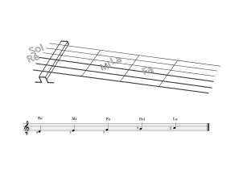

Notes sur Sol et Ré
Pour nos cordes de Sol et de Ré (nos deux cordes du milieu), voici les notes sur les trois premières cases et leur représentation en solfège.
Notes sur Sol et Ré
Pour nos cordes de Sol et de Ré (nos deux cordes du milieu), voici les notes sur les trois premières cases et leur représentation en solfège.

Ah, vous dirais-je, maman
C’est une chanson populaire française datant du 18e siècle, connue surtout grâce à Mozart qui a composé des variations célèbres sur ce thème.
Au clair de la lune
Une chanson populaire française traditionnelle, datant du XVIIIe siècle ou avant.
Aura lee
Chanson populaire américaine devenue célèbre durant la Guerre de Sécession et a inspiré plus tard la mélodie de la chanson « Love Me Tender » d’Elvis Presley.
La flor de la cantuta
Chanson traditionnelle originaire des régions andines, notamment du Pérou et de la Bolivie.